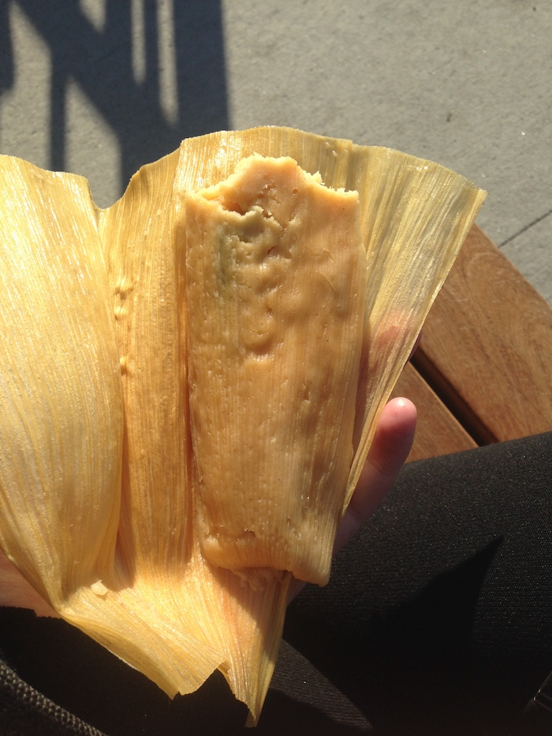

03.03.2020
nyc snack watch: york street station tamales
Lately I've been going to the navy yard a bunch to work on some ash-sprinkling machines, and (a corollary) I've also been eating too many bagels. It's a bit of a snack desert.
I headed there early this morning to do some soldering, and was kind of regretting not eating breakfast, when I stepped out the station to find a tamale stand! (I hadn't seen it there before, but I'd also never got there at 8:40am, perhaps that's a good time!).
I got a cheese tamale (tamale de rajas con queso), and then walked to wegman's bar to wash my hands (1. can't be too careful, 2. wegman's has a bar, lol). It's been getting pretty sunny so I ate it outside, a joy in itself.
What a lovely tamale! Soft, tender, a reasonable amount of cheese, with hot salsa and a roasted poblano pepper. A wonderful leaf breakfast, kinda sad I didn't get more than one.
Watch this space for backseat frying tamale attempts (
this recipe looks promising).
